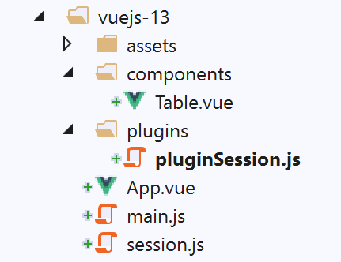

15. projeto [vuejs-13]: atualização de um componente, utilização de uma sessão
O projeto [vuejs-13] retoma o projeto [vuejs-12], introduzindo a seguinte alteração: a tabela apresentada pela tabela HTML é definida num objeto [session] conhecido por todos os componentes. Trata-se, portanto, de uma forma de partilhar informação entre componentes. Este conceito inspira-se diretamente na sessão web. Utilizamos o método do plugin para disponibilizar este objeto partilhado num atributo [Vue.$session].
A estrutura do projeto é a seguinte:

15.1. O objeto [session]
O objeto [session], partilhado por todos os componentes, é definido no script [./session.js]:
const session = {
// lista de simulações
get lignes() {
return this._lignes;
},
// geração da lista de simulações
generateLignes() {
this._lignes =
[
{ id: 3, marié: "oui", enfants: 2, salaire: 35000, impôt: 1200 },
{ id: 5, marié: "non", enfants: 2, salaire: 35000, impôt: 1900 },
{ id: 7, marié: "non", enfants: 0, salaire: 30000, impôt: 2000 }
]
},
// eliminação da linha n.º índice
deleteLigne(index) {
this._lignes.splice(index, 1);
}
}
// exportação do objeto [session]
export default session;
15.2. O plugin [./plugins/pluginSession]
O script [pluginSession] é o seguinte:
export default {
install(Vue, session) {
// adiciona uma propriedade [$session] à classe «vista»
Object.defineProperty(Vue.prototype, '$session', {
// quando a classe Vue.$session é referenciado, o segundo parâmetro [session] do método [install]
get: () => session,
})
}
}
- linha 4: o objeto partilhado [session] estará disponível na propriedade [$session] de todos os componentes;
15.3. O script principal [main.js]
O script principal [main.js] é o seguinte:
// importações
import Vue from 'vue'
import App from './App.vue'
// plugins
import BootstrapVue from 'bootstrap-vue'
Vue.use(BootstrapVue);
// bootstrap
import 'bootstrap/dist/css/bootstrap.css'
import 'bootstrap-vue/dist/bootstrap-vue.css'
// sessão
import session from './session';
import pluginSession from './plugins/pluginSession'
Vue.use(pluginSession, session)
// configuração
Vue.config.productionTip = false
// instanciação do projeto [App]
new Vue({
name: "app",
render: h => h(App),
}).$mount('#app')
- linhas 14-16: o plugin [pluginSession] é integrado na estrutura [Vue.js];
- após a linha 16, o atributo [$session] está disponível para todos os componentes;
15.4. A vista principal [App]
A vista [App] é agora a seguinte:
<template>
<div class="container">
<b-card>
<!-- mensagem -->
<b-alert show variant="success" align="center">
<h4>[vuejs-13] : mise à jour d'un composant, partage des données avec une session</h4>
</b-alert>
<!-- tabela HTML -->
<Table @updateTable="updateTable" :key="versionTable"/>
</b-card>
</div>
</template>
<script>
import Table from "./components/Table";
export default {
// nome
name: "app",
// componentes
components: {
Table
},
// estado interno
data() {
return {
// versão da tabela
versionTable: 1
};
},
// métodos
methods: {
updateTable() {
// eslint-disable-next-line
console.log("App updateTable");
// incrementar versão da tabela
this.versionTable++;
}
}
};
</script>
Comentários
- A vista [App] já não gere a tabela apresentada pelo componente [Table] da linha 9;
- linha 9: o componente [Table] emite o evento [updateTable], que solicita que o componente [Table] seja regenerado. Uma forma de o fazer é utilizar o atributo [:key]. Atribui-se a este atributo um valor modificável. Sempre que este é alterado, o componente [Table] é regenerado;
- linha 9: o valor do atributo [:key] é o atributo [versionTable] da linha 27. O método [updateTable] (linhas 33-38) é responsável por regenerar o componente [Table] da linha 9. Para tal, o método incrementa o valor do atributo [:key] do componente [Table], linha 37. O componente [Table] é então regenerado automaticamente;
15.5. O componente [Table]
O componente [Table] evolui da seguinte forma:
<template>
<div>
<!-- lista vazia -->
<template v-if="lignes.length==0">
<b-alert show variant="warning">
<h4>Votre liste de simulations est vide</h4>
</b-alert>
<!-- botão de atualização-->
<b-button variant="primary" @click="rechargerListe">Recharger la liste</b-button>
</template>
<!-- lista não vazia-->
<template v-if="lignes.length!=0">
<b-alert show variant="primary" v-if="lignes.length==0">
<h4>Liste de vos simulations</h4>
</b-alert>
<!-- tabela de simulações -->
<b-table striped hover responsive :items="lignes" :fields="fields">
<template v-slot:cell(action)="row">
<b-button variant="link" @click="supprimerLigne(row.index)">Supprimer</b-button>
</template>
</b-table>
</template>
</div>
</template>
<script>
export default {
// estado calculado
computed: {
lignes() {
return this.$session.lignes;
}
},
// estado interno
data() {
return {
fields: [
{ label: "#", key: "id" },
{ label: "Marié", key: "marié" },
{ label: "Nombre d'enfants", key: "enfants" },
{ label: "Salaire", key: "salaire" },
{ label: "Impôt", key: "impôt" },
{ label: "", key: "action" }
]
};
},
// métodos
methods: {
supprimerLigne(index) {
// eslint-disable-next-line
console.log("Table supprimerLigne", index);
// a linha é eliminada
this.$session.deleteLigne(index);
// solicita-se ao componente pai que atualize a vista
this.$emit("updateTable");
},
// recarregamento da lista apresentada
rechargerListe() {
// eslint-disable-next-line
console.log("Table rechargerListe");
// regenera-se a lista de simulações
this.$session.generateLignes();
// solicita-se ao componente pai que atualize a vista
this.$emit("updateTable");
}
}
};
</script>
Comentários:
- o atributo [lignes] (linhas 4, 12, 17) já não é um parâmetro definido pelo componente pai, mas sim um atributo calculado do componente [Table] (linhas 30-32). [lignes] é, portanto, a matriz [$session.lignes] (linha 31);
- linhas 49-56: o método [supprimerLigne] faz com que seja eliminada uma linha da tabela [$session.lignes]. Por predefinição, esta eliminação não altera a apresentação da tabela HTML. Com efeito, os elementos de [$session] não são reativos: as suas alterações não se refletem nos componentes que os utilizam. Por este motivo, o componente [Table] solicita ao seu pai que o regenere através do evento [updateTable] (linha 55). Vimos que o componente pai iria então incrementar o atributo [:key] do componente [Table] para forçar a sua regeneração;
- linhas 58-65: o método [rechargerListe] solicita ao objeto [$session] que regenere a tabela [$session.lignes]. Pela mesma razão que anteriormente, esta alteração ao [$session.liste] não altera, por predefinição, a apresentação da tabela HTML. Por este motivo, o componente [Table] solicita ao seu pai que o regenera através do evento [updateTable] (linha 64).
15.6. Execução do projeto

Obteêm-se os mesmos resultados que no projeto [vuejs-12].